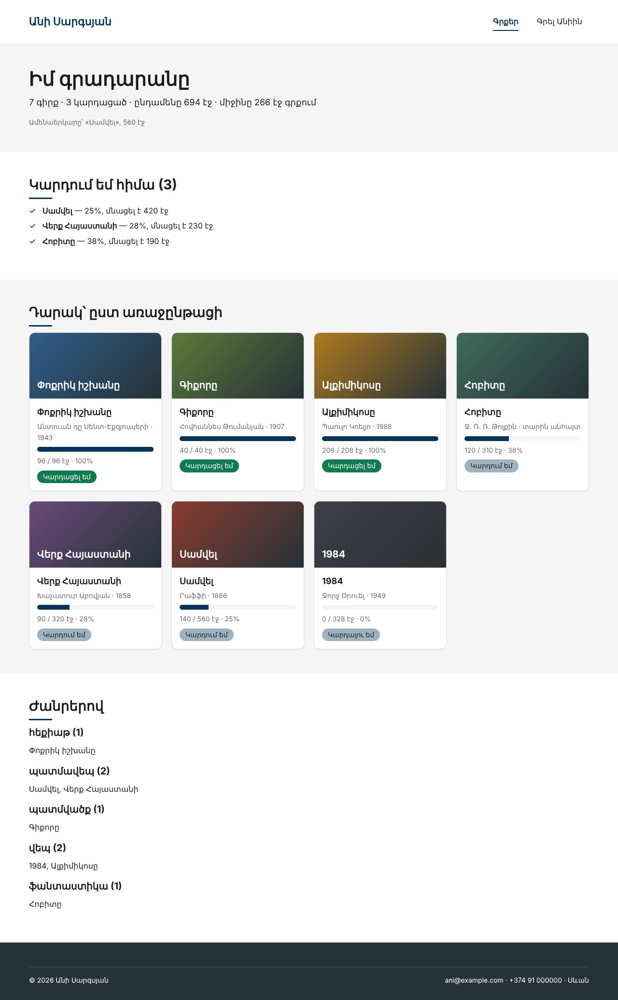

Տնային աշխատանք · PHP Դաս 03 · մինի-նախագիծ
Կրկնվող հաշվարկները դառնում են ֆունկցիաներ functions.php-ում՝ տիպերով և strict_types-ով։ Header-ը և footer-ը՝ առանձին ֆայլեր, որ երկրորդ էջը չկրկնի նույն HTML-ը։ Գլխավոր էջը ցույց է տալիս վիճակագրություն և գրքերը ժանրերով։
Դաս 01–03․ ֆունկցիաներ տիպերով (int, string, bool, array, ?array, void), declare(strict_types=1), array_filter, array_values, array_map, array_reduce, usort, count, require_once __DIR__։ Շաբլոններ և e() դեռ չկան (Դաս 05)։

Շարունակիր քո նախագիծը։ Եթե բաց ես թողել նախորդ դասը, սկսիր Դաս 02-ի օրինակից։
Այս դասին starter չկա․ աշխատում ես քո կոդի վրա։
| Գործարկել |
|---|
php -S localhost:8000 |
declare(strict_types=1); առաջին տողումformatPages, bookStatus, statusLabel, progressfilterByStatus, filterByGenre՝ array_filter + array_valuesfindBook(array $books, int $id): ?array՝ չգտնելիս null (տնային 3)function filterByStatus(array $books, string $status): array
{
$result = array_filter($books, fn(array $b): bool => bookStatus($b) === $status);
return array_values($result); // ⭐ վերահամարակալում՝ 0, 1, 2...
}sortBooks($books, 'progress')՝ usort և <=>totalRead, averagePages, longestBook, shortestBook (տնային 10)groupByGenre(array $books): array՝ ['վեպ' => [...], ...] (տնային 9)partials/header.php և partials/footer.php, $pageTitle-ովrequire_once __DIR__ . '/partials/header.php'․ փորձիր առանց __DIR__-ի ենթաթղթապանակից (տնային 8)globalfindBook($books, 99)-ը վերադարձնում է nullarray_filter-ից հետո միշտ array_values| Սխալ | Ինչպես ուղղել |
|---|---|
TypeError: must be of type int, string given | strict_types-ը միացված է․ փոխանցիր ճիշտ տիպը կամ (int) |
json_encode-ը տալիս է {"1":...} | Մոռացել ես array_values-ը |
Failed opening required | Ուղին հարաբերական է ընթացիկ թղթապանակին․ օգտագործիր __DIR__ |
Ֆունկցիան «չի տեսնում» $books-ը | Ֆունկցիայի ներսում արտաքին փոփոխականները չկան․ փոխանցիր պարամետրով |
Սրանք Դաս 03-ի տնային աշխատանքի կետերն են։ «մինի-նախագծում» նշվածները արդեն կատարել ես վերևի քայլերում՝ Անիի ակումբում։ Մնացածը կատարիր ՏեխնոՄարկետում, ինչպես գրված է դասում։
data.php-ում category դաշտ և գրիր filterByCategory()։ մինի-նախագծումfindProduct(array $products, int $id): ?array։ Ի՞նչ է վերադարձնում, երբ չի գտնում։ մինի-նախագծումarray_filter-ից հետո առանց array_values-ի։ Օգտագործիր var_dump։ մինի-նախագծումjson_encode-ի արդյունքը array_values-ով և առանց դրա։strict_types-ը՝ միացրած և անջատած։ Ի՞նչ տարբերություն։ մինի-նախագծում__DIR__-ը require-ից և կանչիր էջը ենթաթղթապանակից։ Նկարագրիր սխալը։ մինի-նախագծումgroupByCategory(), որը վերադարձնում է զանգված, որտեղ բանալին կատեգորիան է։ մինի-նախագծումԵրբ բաժին 03-ի բոլոր կետերը նշված են, բացիր օրինակը։ Գտիր մեկ բան, որ դու արել ես այլ կերպ, և մտածիր՝ որն է ավելի հասկանալի և ինչու։ Քո լուծումը կարող է տարբերվել և լինել ճիշտ։